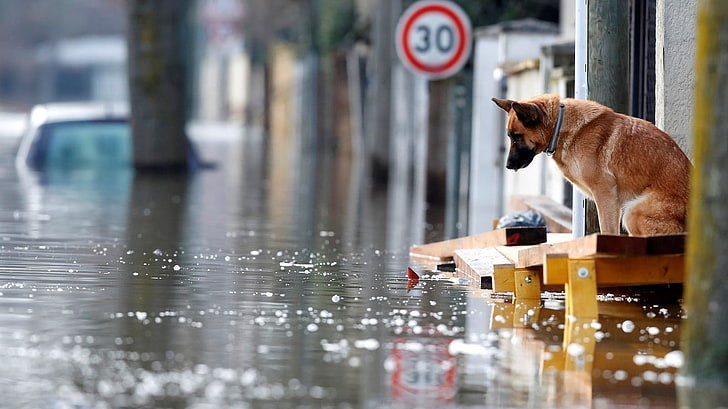

Technical Scope: python (pandas, matplotlib), ML (Scikit-learn), Tableau
This project uses ETL methods to extract NBA data from an API, clean and transform the data into dataframes using python, and lastly export the
desired datasets in CSV format. The mission with this project was to create interactive dashboards for coaches and players to analyze
team and player statistics for upcoming games. The end goal is to develop an accurate predictive model for player stats and for a teams
win probability vs specific opponents.
Sources:
NBA API via GitHub,
StatMuse

This project aims to gain insights into the patterns and trends of natural disasters in the US over the past 70 years.
Analysis includes identifying the most common types of disasters per region in the U.S., the frequency of disasters over the years,
and assessing the effectiveness of disaster declarations and responses.
Technical Scope: python (pandas, matplot), PowerPoint
Sources:
FEMA dataset,
Geoapify API

A dashboard for users to investigate weather in America to help determine whether to visit or move to a location in the U.S.
The National Oceanic and Atmospheric Administration (NOAA) provides vast amount of weather data, which was the foundation to this
project. Follow the instructions in the README to run the dashboards.
Technical Scope: SQL, python, flask, html, leaflet
Sources: NOAA dataset,
GSOD,
BigQuery documentation
This is an ETL demo (extract, transform, load) for a crowdfunding campaign. I extract data from excel files, clean and transform into datasets,
then export/load csv files. I then use these cleaned files to create sql schemas, a database in PostgreSQL using those schemas, and lastly an ERD (entity-relation diagram).
Technical Scope: python, PostgreSQL, QuickDBD
Sources: NOAA dataset,
GSOD,
BigQuery documentation

The purpose of this analysis was to develop and evaluate machine learning models to predict loan risk based on financial
information. The dataset included variables related to loans, and the goal was to predict whether a loan is healthy (0) or high-risk (1).
Analysis involved data preprocessing, model training, and evaluation.
Technical Scope: SQL, python, flask, html, leaflet
Sources: dataset,
GD,
BigQuery